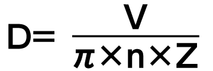

Inverters-FREQROL-A800 Plus Series -FREQROL-A800 Plus for Roll to Roll- System simplification

System simplification 
The FR-A800-R2R inverter has various dedicated functions such as winding diameter calculation, providing stable winding/unwinding control independently.
Winding diameter calculation
The present winding diameter for the winding/unwinding shaft is calculated from the actual line speed or the actual motor speed.
Line speed command input selection / actual line speed input selection
The line speed command and actual line speed required for calculating the winding diameter can be input through the analog input terminal or plug-in option.
Winding diameter calculation function selection
The winding diameter calculation method can be selected in order to improve the tension control performance.
-
Actual line speed calculation method
The winding diameter is calculated from the line speed and the main speed (actual motor speed).
 - Thickness calculation method
The material thickness is added up to find the overall winding diameter.
D = Initial diameter ± 2 × d × N × Z

Initial winding diameter calculation
When the winding diameter changes after the material change or others, the present winding diameter is calculated in the following two ways.
- The present winding diameter is calculated based on the dancer roll movement at a start from the lower limit position to the target position.
- The present winding diameter is calculated from the line speed and the actual motor speed. (The system must be started at low speed.)
Winding diameter / winding length storage
The present value of winding diameter and winding/unwinding length can be stored.
The winding diameter and winding length values are stored in the inverter even during power-OFF.
Dancer feedback speed control / Tension sensor feedback speed control
PID control is performed using feedback of the detected dancer roll position or feedback from the tension sensor.
Stable control can be achieved in combination with the winding diameter calculation.
Speed control proportional gain compensation
By adjusting the speed control proportional gain according to the winding diameter, the response level can be kept constant.
Tension PI gain tuning
By automatically adjusting the tension PI gain for PID control, time required for adjustment is significantly cut down.
Anyone can start the system easily.
Dancer roll malposition detection
When material rupture (break) occurs and the sensor feedback value (dancer/tension feedback) is held at the upper/lower limit for a certain period of time, the break detection signal is output.
Tension sensorless torque control / Tension sensor feedback torque control
The output torque of a motor is controlled so that the tension applied to a material is constant by calculating the winding diameter of a roll.
Mechanical loss compensation function
The tension applied to the material is maintained constant by raising a commanded torque to compensate mechanical loss caused by factors such as friction on the dancer roll or winding/unwinding shaft.
Inertia compensation function
During acceleration/deceleration, the tension applied to the material is maintained constant by adjusting the variable tension on the winding and unwinding sides.

Taper function
By adjusting the tension on the workpiece, it is possible to avoid imperfections such as wrinkles or deformation caused by the increase in diameter.

Tension command cushion time
The cushion time is set for the tension command to avoid sudden change in tension.